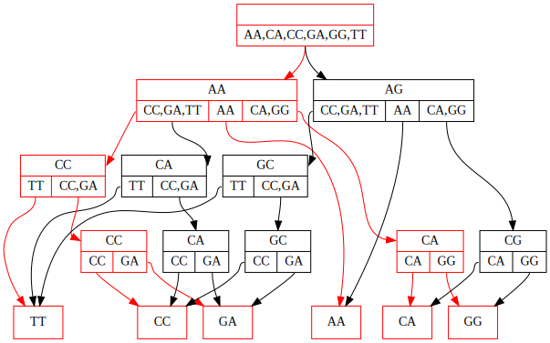

Quickstart
This document provides a conceptual introduction to the history DAG data structure, and provides a walk-through of essential features of the package.
The data structure
A history DAG is a way to represent a collection of trees whose nodes (including internal nodes) each carry label data, such as a nucleotide sequence.
In its simplest form, a history DAG may represent a single tree. To construct such a history DAG from a tree, we annotate each node in the tree with its child clades. The clade beneath a tree node is the set of leaf node labels reachable from that node, or the set containing the node’s own label if it is itself a leaf. We also refer to this set as a node’s clade union, since it is the union of the node’s child clades. The child clades of a node are the set of clades beneath that node’s children.
After annotating each node with its child clades, a UA (universal ancestor) node is added as a parent of the original tree’s root node. The resulting structure is an example of a history DAG which we call a history:
 ->
-> 
Notice that edges in the history DAG are associated not just to a parent node, but to a specific child clade of their parent node. The child clade of the parent node associated to an edge, must be the same as the clade below the child node that the edge targets.
After converting multiple trees with the same set of leaf labels to clade trees, those histories can be unioned to create a history DAG that represents at least those trees used to create it. Any structure in the resulting history DAG which contains the UA node and all leaves, and has exactly one edge for each node-child clade pair, is a history. Histories represent labeled trees by the inverse of the correspondence introduced above:
For example, the history highlighted in red in this image:
{kind=link}
represents this internally labeled tree:

A history DAG in general represents more trees than used to construct it, since it automatically represents trees resulting from swapping certain substructures between input trees. The following figure illustrates a simple example of this, with the two input trees on the left panel yielding a history DAG which represents the original two trees, as well as two new trees shown in the right panel.

Installing
Although the package is not on PyPI, installation is straightforward:
pip install https://github.com/matsengrp/historydag/archive/refs/heads/main.zip
Alternatively, clone the repository and install:
git clone https://github.com/matsengrp/historydag.git
pip install historydag/
Loading Tree Data
HistoryDag objects can be created from tree data using the functions
from_tree() to create a tree-shaped history DAG (a ‘history’), or history_dag_from_trees(),
to create a history DAG from many trees.
Each HistoryDagNode stores node data in two ways: the label
attribute stores a typing.NamedTuple whose data is used to distinguish
HistoryDagNode instances, and the attr attribute stores
all other node annotations not to be used to distinguish node instances.
The functions from_tree() and history_dag_from_trees() provide an
interface for mapping node data in the provided tree data structures to the
appropriate place in the HistoryDagNode data structure.
For example, let’s load some sample trees provided in the [historydag repository](https://github.com/matsengrp/historydag):
>>> import historydag as hdag
>>> import pickle
>>> with open('historydag/sample_data/toy_trees.p', 'rb') as fh:
... ete_trees = pickle.load(fh)
Now, we will create a history DAG using the sequence attribute as the data
for node labels:
>>> dag = hdag.history_dag_from_trees(ete_trees, ['sequence'])
The second argument to history_dag_from_trees() is a list of node
attribute names in the provided data structure, which should be included as
attributes with the same name in node labels in the resulting history DAG.
We can also map node sequences to a history DAG node label attribute of
a different name, using the keyword argument label_functions:
>>> dag = hdag.history_dag_from_trees(
... ete_trees,
... [],
... label_functions={'original_seq': lambda node: node.sequence}
... )
The data stored in each ete3 tree node’s sequence attribute will now appear in
history dag node label attribute original_seq.
Finally, we can also map data from the input trees to the history dag nodes’
attr attribute, which is preserved on copy and by all HistoryDag
operations which do not merge or overwrite nodes.
By providing a function taking a node in the input data structure,
and returning the value of the corresponding HistoryDagNode instance’s
attr attribute.
For example, here we map name attributes to the attr attribute of DAG
nodes:
>>> dag = hdag.history_dag_from_trees(
... ete_trees,
... [],
... label_functions={'original_seq': lambda node: node.sequence},
... attr_func=lambda node: node.name
... )
Loading Non-ete3 Tree Data:
The functions from_tree() and history_dag_from_trees() accept tree
data in the form of ete3.Tree objects by default, but by providing
appropriate functions to the keyword arguments child_node_func and
leaf_node_func.
child_node_func must be a function accepting a node of an input tree, and
returning an iterable containing all the child nodes of that tree.
leaf_node_func must be a function accepting a node of an input tree, and
returning an iterable containing all the leaf nodes reachable below that node.
For example, given a dendropy.TreeList object, with each tree node’s
sequence stored in the sequence record of that node’s annotations
attribute (a dendropy.AnnotationSet), we can create a history DAG
which contains these sequences stored in the node label attribute sequence:
>>> dag = hdag.history_dag_from_trees(
... [tree.seed_node for tree in treelist],
... [],
... label_functions={'sequence': lambda node: node.annotations.get_value('sequence')},
... child_node_func=dendropy.Node.child_nodes,
... leaf_node_func=dendropy.Node.leaf_iter
... )
Loading newick tree data:
The function history_dag_from_newick() can be used to load a history DAG
from a list of newick strings. However, this method uses ete3 internally for
newick parsing.
Basic HistoryDag operations
Sampling, Indexing, and Iterating Over Histories
HistoryDag objects are iterable containers of histories that support integer
indexing via [], and can be passed to len.
Indexing a HistoryDag object will return a tree-shaped HistoryDag (a
history, or equivalently a history DAG containing a single history):
>>> type(dag[0])
<class 'historydag.dag.HistoryDag'>
>>> len(dag[0])
1
>>> dag[0].is_history()
True
It is also trivial to iterate over histories in a history DAG:
>>> history_list1 = [history for history in dag]
>>> history_list2 = list(dag.get_histories())
>>> len(dag) == len(history_list1) == len(history_list2)
True
Note
For HistoryDag objects containing many histories, len may fail with an
overflow error. In general it is safer to use
HistoryDag.count_histories() rather than len. However, a Python
integer of any size may be used as an index, provided it’s in range.
HistoryDag objects also store edge probabilities, which determine
a probability distribution on the histories stored in the DAG.
Histories can be sampled according to this distribution:
>>> dag.sample()
This distribution can also be set to a uniform distribution on histories:
>>> dag.make_uniform()
>>> dag.sample()
Merging
HistoryDag supports set-style union via | and |=:
>>> combined_dag = dag1 | dag2
>>> dag1 |= dag2
Both operators also support iterables containing history DAGs as the right-hand argument:
>>> combined_dag = dag1 | (history for history in dag2)
These operations may also be achieved using the HistoryDag.merge() and
HistoryDag.copy() methods:
>>> combined_dag = dag1.copy()
>>> combined_dag.merge(dag2)
Completion
A history DAG can be “completed”, meaning that all possible edges are added
between nodes. Since the rules for edges are fairly strict, the number of edges
to be added is usually manageable. HistoryDag.make_complete() returns the
number of edges added:
>>> dag.make_complete()
471
Collapsing
A history DAG can also be collapsed with the method
HistoryDag.convert_to_collapsed(), so that no internal edges in the DAG
connect nodes with the same label. Edges adjacent to leaf nodes are not
affected.
Relabeling
A history DAG’s node labels can be changed, in certain limited ways:
HistoryDag.unlabel()can be used to set all internal node labels equal, so that each unique history in the DAG represents a unique tree topology on the leavesHistoryDag.explode_nodes()can be used to duplicate certain internal nodes so that each new node has a new label determined by the original. This can be useful when expanding ambiguous nucleotide sequences, for example.HistoryDag.relabel()can be used to assign new labels to nodes of the DAG, subject to certain constraints.
HistoryDag Subtypes and Conversions
There are a variety of subtypes of HistoryDag, implementing methods
which expect certain node label data:
sequence_dag.SequenceHistoryDagguarantees that node labels possess asequenceattribute, which is expected to contain an unambiguous nucleotide sequence, with each node’s sequence having the same length.sequence_dag.AmbiguousLeafSequenceHistoryDagalso guarantees that node labels possess asequenceattribute, but expects only internal nodes to have unambiguous nucleotide sequences. Leaf nodes are permitted to have ambiguous sequencesmutation_annotated_dag.CGHistoryDagguarantees that node labels possess acompact_genomeattribute, which is expected to contain acompact_genome.CompactGenomeobject, which compactly summarizes an unambiguous nucleotide sequence by storing a collection of mutations relative to a reference sequence. This class implements methods to export to and import from Larch protobuf format.
Conversion between these types is achieved via the
HistoryDag.from_history_dag() method, called from the target class.
For example, to convert a HistoryDag object named dag to
a sequence_dag.SequenceHistoryDag object, we use
sequence_dag.SequenceHistoryDag.from_history_dag():
>>> sequence_dag = SequenceHistoryDag.from_history_dag(dag)
from_history_dag checks that required label fields exist in the input DAG,
and if they do not, attempts to recover the required label data from the other
label fields already present. For a detailed description of this conversion
process, see the documentation for HistoryDag.from_history_dag() and the
class description for HistoryDag.
Defining and Computing History Weights
History weights which can be computed as a sum over edges are very efficiently computable in the history DAG.
Such a history weight can be defined by:
an edge weight function, returning for each edge (i.e. a pair of
HistoryDagNodeobjects) the appropriate weight for that edge, andan accumulation function, returning for a collection of weights their accumulated weight (for example, their sum).
These functions can be provided to the following methods, as the keyword
arguments edge_weight_func and accum_func, respectively:
HistoryDag.weight_count(), which returns acollections.Counterobject containing the weights of all histories in the DAG,HistoryDag.optimal_weight_annotate(), which annotates each history DAG node with the optimal weight of all sub-histories beneath that node, and returns the optimal weight of all histories in the DAG, andHistoryDag.trim_optimal_weight(), which trims the history DAG to express only histories with the optimal weight achieved by all histories in the DAG.
As an example, suppose we want to compute the number of nodes in each history in a history DAG. This can be decomposed as a sum over edges in each history, where each edge is assigned a weight of 1 (since each edge in a tree is associated with a unique child node).
We can compute the minimum number of nodes in any history in a history DAG:
>>> dag.optimal_weight_annotate(
... edge_weight_func=lambda n1, n2: 1,
... accum_func=sum,
... optimal_func=min
... )
35
We can also compute the number of nodes in all the histories in the DAG:
>>> dag.weight_count(
... edge_weight_func=lambda n1, n2: 1,
... accum_func=sum,
... )
Counter({35: 17, 36: 325, 37: 173})
Here, the keys in the collections.Counter are weights, and the values
are the number of histories with each weight. Notice the values will always add
to len(dag).
Finally, we can trim dag to only express the histories with the maximum
number of nodes:
>>> dag.trim_optimal_weight(
... edge_weight_func=lambda n1, n2: 1,
... accum_func=sum,
... optimal_func=max
... )
37
>>> dag.weight_count(
... edge_weight_func=lambda n1, n2: 1,
... accum_func=sum,
... )
Counter({37: 173})
The AddFuncDict
Since the interfaces of these three methods are very similar, we provide
a special subclassed dictionary utils.AddFuncDict for storing
their keyword arguments.
We can build a utils.AddFuncDict that implements the history weight from
the last example. The additional function start_func defines what weight
should be assigned to each leaf node, and should usually be function which simply
returns the additive identity of the weight type, such as lambda node: 0.
>>> node_count_funcs = hdag.utils.AddFuncDict(
... {
... "start_func": lambda n: 0,
... "edge_weight_func": lambda n1, n2: 1,
... "accum_func": sum,
... },
... name="NodeCount",
... )
This object can then be used as a dictionary of keyword arguments:
>>> dag.weight_count(**node_count_funcs)
Counter({37: 173})
A variety of useful utils.AddFuncDict objects are provided:
utils.hamming_distance_countfuncsallow computation of histories’ Hamming parsimony scores, in history DAGs whose nodes havesequencelabel attributes containing unambiguous nucleotide sequences of equal length.mutation_annotated_dag.compact_genome_hamming_distance_countfuncsallow computation of Hamming parsimony scores, in history DAGs whose nodes havecompact_genomelabel attributes containingcompact_genome.CompactGenomeobjects.sequence_dag.leaf_ambiguous_hamming_distance_countfuncsallow computation of Hamming parsimony scores, in history DAGs whose nodes havesequencelabel attributes, and whose leaf node sequences may contain ambiguous nucleotide characters.utils.node_countfuncsis the object defined above, for counting the number of nodes in histories.utils.make_rfdistance_countfuncs()creates autils.AddFuncDictwhich can be used to compute Robinson Foulds distances between histories and a provided reference historyutils.make_newickcountfuncs()creates autils.AddFuncDictwhich can be used to build newick strings for all histories in the DAG, although this functionality is conveniently wrapped inHistoryDag.to_newick()andHistoryDag.to_newicks().
Combining Weights
The primary advantage of a utils.AddFuncDict object over a plain
dictionary is its composability via the + operator.
Addition of two AddFuncDict objects returns a new AddFuncDict which
computes the weights implemented by the original two AddFuncDict’s
simultaneously, storing them in a tuple.
For example, we can compute in paired fashion the parsimony score and number of nodes for each history in a history DAG:
>>> dag.weight_count(**(utils.hamming_distance_countfuncs + utils.node_countfuncs))
Counter({(73, 35): 17, (73, 36): 320, (74, 36): 5, (74, 37): 112, (73, 37): 61})
Since the python functions min and max implement a lexicographic
ordering on tuples, the following are equivalent:
>>> dag.trim_optimal_weight(optimal_func=max, **(utils.hamming_distance_countfuncs + utils.node_countfuncs))
and
>>> dag.trim_optimal_weight(optimal_func=max, **utils.hamming_distance_countfuncs)
>>> dag.trim_optimal_weight(optimal_func=max, **utils.node_countfuncs)
An arbitrary number of utils.AddFuncDict objects can be added
together. The resulting weight type will be a tuple of weights, respecting the
order of addition (note that nested tuples are avoided). The names of each
weight are stored in the names attribute of the resulting data structure:
>>> kwargs = utils.hamming_distance_countfuncs + utils.node_countfuncs
>>> kwargs.names
('HammingParsimony', 'NodeCount')
Exporting Tree Data
A very similar interface is provided for exporting to ete trees as for
importing from them via history_dag_from_trees().
The relevant method is HistoryDag.to_ete(), which takes keyword arguments
name_func, which maps a history DAG node to the data to be stored in thenameattribute of the corresponding ete node,features, which is a list of history DAG node label attribute names whose data should be transferred to ete node attributes of the same names, andfeature_funcs, which is a dictionary keyed by ete node attribute names, containing functions which accept history DAG nodes and return the appropriate data to be stored in each attribute.
A similar interface is provided for the method HistoryDag.to_newick() and
HistoryDag.to_newicks().
History DAGs, including histories, can also be easily visualized using the
HistoryDag.to_graphviz() method.
TLDR: A Quick Tour
In this package, the history DAG is a recursive data structure consisting of
historydag.HistoryDagNode objects storing label, clade, and adjacency
data. Each history DAG is wrapped in a user-facing historydag.HistoryDag
object, which points to the UA node, and provides API-exposed methods.
The historydag repository provides some sample data in the form of pickled
ete3.Tree objects whose nodes have name and sequence
attributes, and which all have the same hamming parsimony score.
Working from a directory containing the cloned historydag repository,
we can load this data and create a history DAG:
>>> import historydag as hdag
>>> import pickle
>>> with open('historydag/sample_data/toy_trees.p', 'rb') as fh:
... ete_trees = pickle.load(fh)
>>> len(ete_trees)
100
Now, we will create a history DAG using the sequence attribute as the data
for node labels:
>>> dag = hdag.history_dag_from_etes(ete_trees, ['sequence'])
>>> dag.count_histories()
1041
>>> dag.count_topologies()
389
Notice that the history DAG we created has many more unique trees than we used to create it, as well as more unique topologies, ignoring internal node labels. However, all trees in the history DAG are guaranteed to have the same parsimony score, if the input trees were maximally parsimonious. In this example, all 1041 trees in the DAG have a parsimony score of 75:
>>> dag.hamming_parsimony_count()
Counter({75: 1041})
If the input trees were found by a parsimony program like dnapars, inferred ancestral sequences may contain nucleotide ambiguity codes. We can expand nodes according to these codes:
>>> dag.explode_nodes(expand_func=hdag.utils.sequence_resolutions)
0
However, in this case we see that doing so adds no new nodes (the return value
of explode_nodes).
We can find even more new trees by adding all edges which connect nodes whose child clades are compatible:
>>> dag.make_complete()
1048
>>> dag.count_histories()
3431531
After such edge additions, all the trees in the DAG are no longer guaranteed to have the same parsimony score, but we can trim the DAG to express only trees with the minimum parsimony score:
>>> dag.hamming_parsimony_count()
Counter({79: 688307, 78: 656079, 80: 586769, 77: 476362, 81: 400509, 76: 220205, 82: 218542, 83: 96485, 75: 45983, 84: 32848, 85: 8070, 86: 1324, 87: 48})
>>> dag.trim_optimal_weight()
>>> dag.hamming_parsimony_count()
Counter({75: 45983})
The history DAG may contain edges connecting nodes with the same label. We can collapse such edges, resulting in a DAG representing the trees we’d get by individually collapsing all the trees represented in the DAG.
>>> dag.convert_to_collapsed()
>>> dag.hamming_parsimony_count()
Counter({75: 1208})
>>> dag.count_topologies()
1054
The method historydag.HistoryDag.hamming_parsimony_count() calls a more
flexible method, historydag.HistoryDag.weight_count(), which takes three
functions as keyword arguments, which specify how weights are calculated up
each tree:
>>> dag.weight_count(** hdag.utils.hamming_distance_countfuncs)
Counter({75: 1208})
hdag.utils.hamming_distance_countfuncs is an instance of
historydag.utils.AddFuncDict, a dictionary subclass provided to
contain the functions necessary to count and trim by custom tree weights.
The class implements addition, combining weight count function arguments as new
functions which count weights jointly as tuples.
For example, we can jointly count parsimony score and the number of unique
nodes in each tree, at the same time:
>>> node_count_funcs = hdag.utils.AddFuncDict(
... {
... "start_func": lambda n: 0,
... "edge_weight_func": lambda n1, n2: n1.label != n2.label,
... "accum_func": sum,
... },
... name="NodeCount",
... )
>>> dag.weight_count(** (node_count_funcs + hdag.utils.hamming_distance_countfuncs))
Counter({(50, 75): 444, (51, 75): 328, (49, 75): 270, (52, 75): 94, (48, 75): 68, (53, 75): 4})
Now we can trim to only the trees with 48 unique node labels:
>>> dag.trim_optimal_weight(** node_count_funcs, optimal_func=min)
Finally, we can sample a single history from the history DAG, and make it an ete tree for further rendering/processing:
>>> t = dag.sample().to_ete()
The historydag.HistoryDag.to_ete() method allows full control over
mapping of history DAG node attributes to ete3.Tree node attributes.
We can also retrieve trees in the history DAG by index, and iterate in index-order:
>>> t = dag[0].to_ete()
>>> trees = [tree for tree in dag]
Another method for fetching all trees in the dag is provided, but the order will not match index order:
>>> scrambled_trees = list(dag.get_histories())
History DAGs can be merged using the historydag.HistoryDag.merge()
method, or equivalently using the or operator. This supports merging with
sequences of history DAGs.
>>> newdag = dag[0] | dag[1]
>>> newdag = dag[0] | (dag[i] for i in range(3,5))